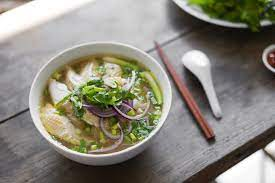

A few years ago, I'd never even heard of pho, let alone tasted it. Now, giant bowls of this traditional Vietnamese noodle soup are a regular meal in our house. Carrot Ginger Soup There are three things I can thank for this change: 1) Moving to a part of the country where pho restaurants are as common as pizza joints. 2) Several months of gluten-free eating last year due to a health issue. 3) Meeting and becoming friends with Vietnamese cooking expert Andrea Nguyen. Andrea has now published a new book entirely devoted to -- what else?! -- pho, and I'd like to share with you her recipe for Quick Chicken Pho. This recipe is a great introduction to pho if you've never had it before. And for pho addicts like myself, it's a good one to have around when a pho-craving strikes.